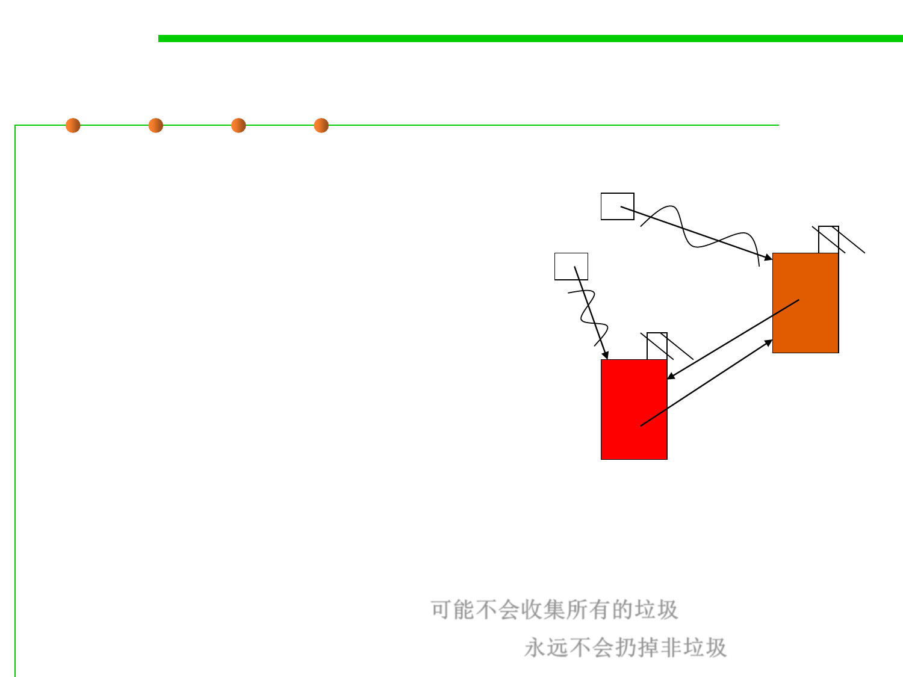

8.1 Metrics, Principles, and Methods of Construction for Performance
A pitfall of reference counting: reference cycles
▪ reference cycles, an object which refers directly or indirectly to itself.
objA = new Class(); //RC(M1)=1
objB = new Class(); //RC(M2)=1
objA.instance = objB; //RC(M2)=2
objB.instance = objA; //RC(M1)=2
objA
objcB
121
M1
objA = null; //RC(M1)=1
objB = null; //RC(M2)=1
▪ Both of the chunks above are garbage;
121
M2
▪ Both of the chunks above have a reference count of 1
▪ Neither chunk will be reclaimed
▪ Reference counting fails conservatively
– it may not collect all the garbage 可能不会收集所有的垃圾
– but it will never throw away non-garbage 永远不会扔掉非垃圾